이 교안은 수업용 하나의 자료입니다. 각 장의 생각해보기는 먼저 스스로 답해 본 뒤, 바로 아래 해설 상자에서 확인하세요. 실습문제 정답은 부록 A에 있으니 직접 풀어 본 다음 펼쳐 보는 것을 권합니다.
지금까지 배운 넘파이·판다스 문법을 실제 데이터에 적용해 보면서, 데이터 분석의 전체 흐름을 처음부터 끝까지 경험합니다. 이 수업을 마치면 다음을 할 수 있습니다.
groupby, pivot_table로 그룹별 통계를 비교할 수 있다.| 장 | 단계 | 내용 | 주요 도구 |
|---|---|---|---|
| 1 | 환경 준비 | 라이브러리 불러오기, 한글 폰트 설정 | import |
| 2 | 데이터 살펴보기 | 크기·모양·자료형 확인 | read_csv, head, info, describe |
| 3 | 결측치 처리 | 빈 값 찾아서 채우기/버리기 | isnull, fillna, drop |
| 4 | 단일 변수 분석 | 성별·등급·항구별 생존율 | value_counts, groupby |
| 5 | 다변수 분석 | 두 조건을 함께 비교 | pivot_table, crosstab |
| 6 | 파생 변수 | 가족 수, 나이대, 호칭 만들기 | np.where, pd.cut, str.extract |
| 7 | 시각화 | 그래프로 한눈에 보기 | seaborn, matplotlib |
| 8 | 사실 정리 & 예측 | 규칙으로 생존 예측하기 | 넘파이 비교 연산 |
| 9 | 정리 | 핵심 코드 요약, 자주 만나는 오류 | — |
| 10·11 | 인사이트 & 조언 | 분석 결과를 의미로 바꾸고, 분석하는 방법을 돌아보기 | — |
| 파일 | 설명 |
|---|---|
| titanic_kaggle.csv | 분석할 데이터(Kaggle 원본). 예제는 깃허브에서 바로 내려받으므로, 인터넷이 안 될 때만 예제와 같은 폴더에 두고 사용 |
| 03_예제_타이타닉_데이터분석 .ipynb / .py | 교안 1~9장 코드가 같은 번호 순서로 들어 있는 예제. 주석이 자세히 달려 있음 |
| 04_실습문제_타이타닉 .ipynb / .py | 15개 실습 문제 (기초 5 · 중급 6 · 도전 4). 정답은 부록 A |
| handout_src/ | 이 교안 PDF를 만드는 소스 (build.py, handout.html, 그림) |
# %% 셀 단위로 실행할 수 있습니다.| 교시 | 내용 | 시간 | 포인트 |
|---|---|---|---|
| 1교시 | 0장 수업 안내, 1~2장 환경 준비·데이터 살펴보기 | 50분 | 설치·폰트 문제를 이때 모두 해결 |
| 2교시 | 3장 결측치 처리, 4장 단일 변수 분석 | 50분 | transform 개념에 시간 투자 |
| 3교시 | 5장 다변수 분석, 6장 파생 변수 | 50분 | 정규식은 가볍게 |
| 4교시 | 7장 시각화, 8~11장 예측·인사이트·조언 | 50분 | 실습문제는 남은 시간 또는 과제 |
pip install pandas numpy matplotlib seabornhttps://raw.githubusercontent.com/sinaboro/data/main/titanic_kaggle.csvdf["열"].fillna(값, inplace=True) 같은 체인 할당이 원본을 바꾸지 않으므로 df["열"] = df["열"].fillna(값) 형태로 쓰세요. 문자열 열의 자료형도 object 대신 str로 표시됩니다.분석에 필요한 도구(라이브러리)를 불러오고, 그래프에서 한글이 깨지지 않도록 글꼴을 설정합니다.
| 라이브러리 | 별명 | 하는 일 |
|---|---|---|
| numpy | np | 숫자 계산, 배열 연산 (조건으로 값 만들기: np.where) |
| pandas | pd | 표(DataFrame) 형태의 데이터 다루기 |
| matplotlib | plt | 그래프 그리기의 기본 도구 (제목, 축 이름, 화면 표시) |
| seaborn | sns | matplotlib을 더 쉽고 예쁘게 쓰게 해주는 통계 그래프 도구 |
import numpy as np # 넘파이는 관례적으로 np 라는 별명으로 import pandas as pd # 판다스는 pd import matplotlib.pyplot as plt # 그래프 도구는 plt import seaborn as sns # 시본은 sns
matplotlib의 기본 글꼴은 한글을 지원하지 않아서 한글이 □□□처럼 깨집니다. 운영체제에 맞는 한글 글꼴을 지정합니다.
예제 1-2import platform if platform.system() == 'Windows': font_name = 'Malgun Gothic' # 윈도우 → 맑은 고딕 elif platform.system() == 'Darwin': font_name = 'AppleGothic' # 맥 → 애플고딕 else: font_name = 'NanumGothic' # 리눅스/코랩 → 나눔고딕 sns.set_theme(style='whitegrid', font=font_name) # 스타일 + 글꼴 함께 지정 plt.rcParams['axes.unicode_minus'] = False # 마이너스(-) 기호 깨짐 방지
sns.set_theme()은 글꼴 설정을 초기화합니다. 글꼴은 반드시 set_theme(font=...) 안에 함께 넣거나, set_theme() 뒤에 설정하세요.데이터 파일을 따로 내려받을 필요 없이, 깃허브에 올려 둔 CSV를 URL로 바로 읽습니다. 내 PC, 주피터, 구글 코랩 어디서든 똑같이 실행됩니다.
예제 1-3DATA_URL = 'https://raw.githubusercontent.com/sinaboro/data/main/titanic_kaggle.csv'
df = pd.read_csv(DATA_URL) # 주소를 넣으면 내려받으면서 바로 읽어 줌
raw.githubusercontent.com 주소는 깃허브 웹페이지가 아니라 파일의 원본 내용(raw)만 돌려줍니다. read_csv()에는 반드시 raw 주소를 넣어야 합니다.https://raw.githubusercontent.com/<계정>/<저장소>/<브랜치>/<파일이름>titanic_kaggle.csv를 노트북과 같은 폴더에 두고 DATA_URL = "titanic_kaggle.csv"로 바꿔 씁니다.데이터 분석의 첫 단계는 "이 데이터가 어떻게 생겼는지" 아는 것입니다. 처음 보는 데이터를 만나면 항상 아래 네 가지를 확인하세요.
| 확인할 것 | 코드 | 알 수 있는 것 |
|---|---|---|
| 몇 행, 몇 열? | df.shape | (891, 12) → 승객 891명, 정보 12가지 |
| 실제 값은? | df.head(), df.tail(), df.sample() | 각 열에 어떤 값이 들어 있는지 |
| 자료형과 빈 값은? | df.info() | 열별 자료형, 비어 있지 않은 값의 개수 |
| 숫자 열의 분포는? | df.describe() | 평균, 최솟값, 최댓값, 사분위수 |
df = pd.read_csv(DATA_URL) # 깃허브의 CSV 를 읽어서 DataFrame(표)으로 만들기 df_raw = df.copy() # 원본은 따로 복사해 두기 (언제든 다시 시작 가능) print('데이터 크기(행, 열) :', df.shape) # (891, 12) df.head() # 위에서부터 5 줄 보기
df_raw = df처럼 그냥 대입하면 복사가 아니라 같은 데이터를 가리키는 이름이 하나 더 생길 뿐입니다(넘파이의 view와 같은 개념). 원본을 보존하려면 반드시 .copy()를 쓰세요.| 컬럼 | 의미 | 값의 예 |
|---|---|---|
| PassengerId | 승객 번호 | 1, 2, 3 … |
| Survived | 생존 여부 (분석 대상!) | 0 = 사망, 1 = 생존 |
| Pclass | 객실 등급 | 1 = 1등석, 2 = 2등석, 3 = 3등석 |
| Name | 이름 (호칭 포함) | Braund, Mr. Owen Harris |
| Sex | 성별 | male, female |
| Age | 나이 | 22.0, 0.42(아기) … |
| SibSp | 함께 탄 형제자매 + 배우자 수 | 0, 1, 2 … |
| Parch | 함께 탄 부모 + 자녀 수 | 0, 1, 2 … |
| Ticket | 티켓 번호 | A/5 21171 |
| Fare | 운임(요금) | 7.25, 71.28 … |
| Cabin | 객실 번호 | C85 (빈 값이 매우 많음) |
| Embarked | 탑승 항구 | C = 셰르부르, Q = 퀸스타운, S = 사우샘프턴 |
df.info() # 열별 자료형과 비어 있지 않은 값의 개수 df.describe().round(2) # 숫자 열 요약 통계 (소수 둘째 자리까지) df.describe(exclude='number') # 문자열 열 요약 (종류 수, 최빈값 등)
info() 결과에서 Non-Null Count가 891보다 작은 열이 결측치가 있는 열입니다.
| 열 | 개수 | 평균 | 최솟값 | 중앙값 | 최댓값 |
|---|---|---|---|---|---|
| Survived | 891 | 0.38 | 0 | 0 | 1 |
| Pclass | 891 | 2.31 | 1 | 3 | 3 |
| Age | 714 | 29.70 | 0.42 | 28.00 | 80.00 |
| Fare | 891 | 32.20 | 0.00 | 14.45 | 512.33 |
groupby().mean()으로 생존율을 구하는 핵심 개념입니다.현실의 데이터에는 빈 값(결측치, NaN)이 자주 있습니다. 그대로 두면 평균 계산, 그래프, 머신러닝에서 문제가 생기므로 찾아내고 → 이유를 생각하고 → 적절히 처리해야 합니다.
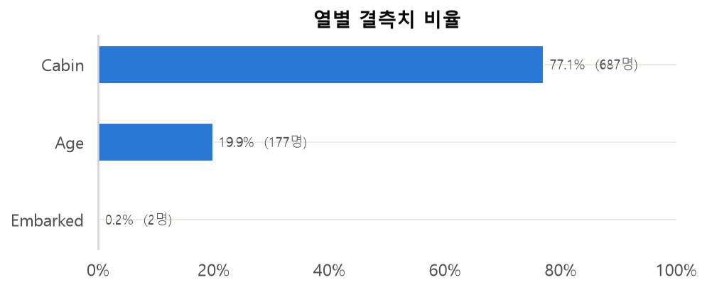
| 처리 방법 | 언제 쓰나? | 코드 |
|---|---|---|
| 삭제 | 빈 값이 너무 많거나, 아주 조금일 때 | dropna(), drop() |
| 대표값으로 채우기 | 숫자 → 평균/중앙값, 문자 → 최빈값 | fillna() |
| 그룹별 대표값으로 채우기 | 그룹마다 값의 차이가 클 때 | groupby().transform() |
df.isnull().sum() # 빈 값이면 True(1) → 더하면 열별 결측치 개수 df.isnull().mean() * 100 # 평균을 내면 결측치 비율(%)
| 열 | 결측치 수 | 비율 | 처리 방법 |
|---|---|---|---|
| Cabin | 687 | 77.1% | 너무 많이 비어 있음 → "객실 정보 있음(HasCabin)" 열만 만들고 삭제 |
| Age | 177 | 19.9% | 중요한 정보 → 그룹별 중앙값으로 채우기 |
| Embarked | 2 | 0.2% | 단 2개 → 최빈값(S)으로 채우기 |
most_common_port = df['Embarked'].mode()[0] # 최빈값 (결과가 Series 라서 [0]으로 꺼냄) df['Embarked'] = df['Embarked'].fillna(most_common_port) # 결과를 꼭 다시 대입!
df['HasCabin'] = df['Cabin'].notnull().astype(int) # 값이 있으면 1, 없으면 0 df = df.drop(columns=['Cabin']) # Cabin 열 삭제
객실 번호가 기록된 승객의 생존율은 66.7%, 기록이 없는 승객은 30.0%였습니다. 빈 값 자체가 정보가 될 수도 있습니다 (→ 10장 인사이트 ⑤).
전체 중앙값(28세) 하나로 채울 수도 있지만, 객실 등급·성별에 따라 나이 차이가 큽니다.
| 객실 등급 | 여성 중앙값 | 남성 중앙값 |
|---|---|---|
| 1등석 | 35.0세 | 40.0세 |
| 2등석 | 28.0세 | 30.0세 |
| 3등석 | 21.5세 | 25.0세 |
# transform('median') : 그룹별 중앙값을 '원래 행 개수(891 개) 그대로' 각 행에 붙여 줌 group_median_age = df.groupby(['Pclass', 'Sex'])['Age'].transform('median') df['Age'] = df['Age'].fillna(group_median_age) # 빈 칸만 그룹 중앙값으로 채워짐 df.isnull().sum().sum() # 0 이면 모든 결측치 처리 완료!
groupby().median() → 그룹 수만큼(6행) 결과가 나옴 → fillna에 바로 못 넣음groupby().transform("median") → 원래 행 수(891행) 그대로 결과가 나옴 → fillna에 바로 넣을 수 있음df["Age"].fillna(28)만 하고 대입을 안 함 → 반환값을 대입해야 함inplace=True 사용 → 판다스 3에서는 원본이 바뀌지 않음 (Copy-on-Write)groupby().median() 결과(6행)를 fillna에 넣음 → 행 개수가 달라서 안 됨이제 질문을 던지고 데이터로 답을 찾아봅니다.
df.groupby("기준열")["Survived"].mean() → 기준열 그룹별 생존율df['Survived'].value_counts() # 0: 549 명, 1: 342 명 df['Survived'].value_counts(normalize=True) # 비율로 보기 df['Survived'].mean() # 전체 생존율 0.384
sex_survival = df.groupby('Sex')['Survived'].agg(['count', 'sum', 'mean'])
# count = 승객 수, sum = 생존자 수, mean = 생존율
| 성별 | 승객 수 | 생존자 수 | 생존율 |
|---|---|---|---|
| female (여성) | 314 | 233 | 74.2% |
| male (남성) | 577 | 109 | 18.9% |
여성의 생존율이 남성보다 약 4배 높습니다. "여성과 어린이 먼저"라는 구조 원칙이 실제로 지켜졌음을 데이터로 확인할 수 있습니다.
| 객실 등급 | 승객 수 | 생존율 |
|---|---|---|
| 1등석 | 216 | 63.0% |
| 2등석 | 184 | 47.3% |
| 3등석 | 491 | 24.2% |
| 탑승 항구 | 생존율 |
|---|---|
| C (셰르부르) | 55.4% |
| Q (퀸스타운) | 39.0% |
| S (사우샘프턴) | 33.9% |
df.groupby('Survived')[['Age', 'Fare', 'SibSp', 'Parch', 'HasCabin']].mean()
| 구분 | 평균 나이 | 평균 요금 | 객실 정보 있음 |
|---|---|---|---|
| 사망 (0) | 29.7세 | 22.12 | 12% |
| 생존 (1) | 28.1세 | 48.40 | 40% |
agg(["count","sum","mean"])처럼 리스트로 여러 함수를 한 번에 넣을 수 있습니다.성별도 중요하고 등급도 중요했습니다. 그렇다면 "3등석 여성"과 "1등석 남성" 중 누가 더 많이 살아남았을까요? 두 개 이상의 조건을 함께 비교할 때는 pivot_table과 crosstab을 사용합니다.
pd.pivot_table(df,
index='Sex', # 행(세로) 기준
columns='Pclass', # 열(가로) 기준
values='Survived', # 계산할 값
aggfunc='mean') # 계산 방법 (평균 = 생존율)
| 성별 \ 등급 | 1등석 | 2등석 | 3등석 |
|---|---|---|---|
| female | 96.8% | 92.1% | 50.0% |
| male | 36.9% | 15.7% | 13.5% |
1·2등석 여성은 90% 이상 생존했지만, 2·3등석 남성은 15% 안팎에 그쳤습니다. 3등석 여성(50%)이 1등석 남성(37%)보다 생존율이 높습니다 → 성별의 영향이 등급보다 컸습니다.
df.groupby(["Sex","Pclass"])["Survived"].mean().unstack()의 결과가 pivot_table과 같습니다. 즉석 퀴즈: aggfunc를 "count", "sum"으로 바꾸면? → 승객 수, 생존자 수pd.crosstab(df['Embarked'], df['Pclass'], margins=True) # 개수 + 합계 pd.crosstab(df['Embarked'], df['Pclass'], normalize='index') # 행(항구)별 비율
| 항구 \ 등급 | 1등석 | 2등석 | 3등석 |
|---|---|---|---|
| C | 50.6% | 10.1% | 39.3% |
| Q | 2.6% | 3.9% | 93.5% |
| S | 20.0% | 25.4% | 54.6% |
기존 열을 조합하거나 가공해서 분석에 더 유용한 새 열을 만드는 것을 파생 변수(Feature Engineering)라고 합니다.
| 새 열 | 만드는 방법 | 사용할 도구 |
|---|---|---|
| FamilySize | 형제자매·배우자 + 부모·자녀 + 본인 | 열끼리 덧셈 |
| IsAlone | 가족 수가 1명이면 1, 아니면 0 | np.where |
| AgeGroup | 나이를 구간으로 나누기 | pd.cut |
| FareBand | 요금을 같은 인원수로 4등분 | pd.qcut |
| Title | 이름에서 호칭(Mr, Mrs…) 뽑기 | str.extract |
df['FamilySize'] = df['SibSp'] + df['Parch'] + 1 # +1 은 '나 자신' df['IsAlone'] = np.where(df['FamilySize'] == 1, 1, 0) # np.where(조건, 참값, 거짓값)
| 가족 수 | 1 | 2 | 3 | 4 | 5 | 6 | 7 | 8 | 11 |
|---|---|---|---|---|---|---|---|---|---|
| 승객 수 | 537 | 161 | 102 | 29 | 15 | 22 | 12 | 6 | 7 |
| 생존율 | 30.4% | 55.3% | 57.8% | 72.4% | 20.0% | 13.6% | 33.3% | 0% | 0% |
혼자 탄 승객(30%)보다 2~4인 가족(55~72%)의 생존율이 높았지만, 5인 이상 대가족은 오히려 크게 낮았습니다.
df['AgeGroup'] = pd.cut(df['Age'],
bins=[0, 12, 19, 39, 59, 100], # 구간 경계
labels=['어린이', '청소년', '청년', '중년', '노년'])
df.groupby('AgeGroup', observed=True)['Survived'].mean()
| 나이대 | 어린이(~12) | 청소년(~19) | 청년(~39) | 중년(~59) | 노년(60~) |
|---|---|---|---|---|---|
| 생존율 | 58.0% | 41.1% | 36.3% | 37.3% | 26.9% |
pd.cut : 값의 범위를 기준으로 나눔 (자로 재기) → 구간마다 사람 수가 다를 수 있음pd.qcut : 사람 수가 같아지도록 나눔 (줄 세우기) → 4등분이면 각 구간에 약 25%씩df['FareBand'] = pd.qcut(df['Fare'], 4, labels=['저가', '중저가', '중고가', '고가'])
요금 등급별 생존율: 저가 19.7% → 중저가 30.4% → 중고가 45.5% → 고가 58.1%. 비싼 표일수록 생존율이 높습니다.
이름 형식은 "성, 호칭. 이름"입니다. 예) Braund, Mr. Owen Harris → 쉼표와 마침표 사이를 뽑으면 호칭!
예제 6-4df['Title'] = df['Name'].str.extract(r',\s*([^\.]+)\.', expand=False) # 쉼표~마침표 사이 df['Title'] = df['Title'].replace({'Mlle': 'Miss', 'Ms': 'Miss', 'Mme': 'Mrs'}) main_titles = ['Mr', 'Miss', 'Mrs', 'Master'] df['Title'] = np.where(df['Title'].isin(main_titles), df['Title'], 'Rare') # 나머지는 Rare
| 호칭 | 의미 | 승객 수 | 평균 나이 | 생존율 |
|---|---|---|---|---|
| Mr | 성인 남성 | 517 | 31.3세 | 15.7% |
| Master | 어린 남자아이 | 40 | 6.6세 | 57.5% |
| Miss | 미혼 여성 | 185 | 21.9세 | 70.3% |
| Mrs | 기혼 여성 | 126 | 34.7세 | 79.4% |
| Rare | Dr, Rev, Col 등 | 23 | 45.3세 | 34.8% |
같은 남성이라도 Master(남자아이)는 생존율이 Mr의 3배 이상입니다 → "어린이 먼저" 원칙의 증거!
df["Name"].str.split(",").str[1].str.split(".").str[0].str.strip()np.where는 넘파이 수업 내용이 실전에서 그대로 쓰이는 대표 사례입니다.observed=True를 주면 실제로 존재하는 그룹만 계산하고 경고를 막습니다.숫자 표는 정확하지만, 그래프는 차이를 한눈에 보여 줍니다. 그래프는 그리는 것보다 읽는 것이 더 중요합니다. 그래프마다 "여기서 무엇을 읽을 수 있나?"를 스스로 물어보세요.
| 그래프 | 언제 쓰나? | seaborn 함수 |
|---|---|---|
| 막대(개수) | 범주별 개수 비교 | sns.countplot |
| 막대(평균) | 범주별 평균(생존율) 비교 | sns.barplot |
| 히스토그램 | 숫자 데이터의 분포 | sns.histplot |
| 상자 그림 | 그룹별 분포·이상치 비교 | sns.boxplot |
| 점·선 그래프 | 순서가 있는 범주의 변화 | sns.pointplot |
| 히트맵 | 여러 변수의 상관관계 | sns.heatmap |
fig, axes = plt.subplots(1, 3, figsize=(16, 4.5)) # 그래프 3 개를 나란히 sns.countplot(data=df, x='Survived', ax=axes[0]) # 개수 막대 sns.barplot(data=df, x='Sex', y='Survived', errorbar=None, ax=axes[1]) # 평균=생존율 sns.barplot(data=df, x='Pclass', y='Survived', hue='Sex', errorbar=None, ax=axes[2]) plt.tight_layout() plt.show()
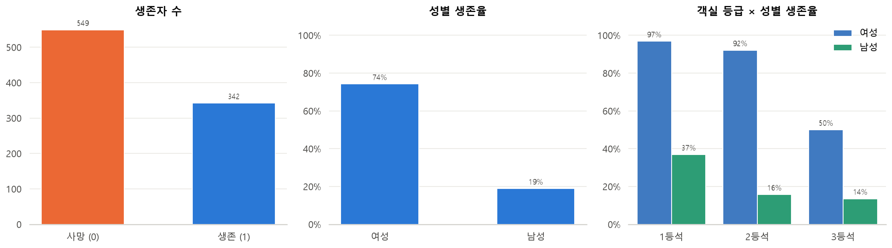
sns.histplot(data=df_raw, x='Age', hue='Survived', multiple='stack', bins=30)
# ※ 결측치를 채우기 전의 원본(df_raw)으로 그려야 실제 나이 분포를 볼 수 있음
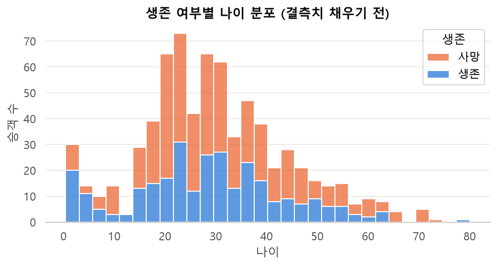
상자 가운데 선 = 중앙값, 상자 위/아래 = 75%/25% 지점, 수염 밖의 점 = 이상치
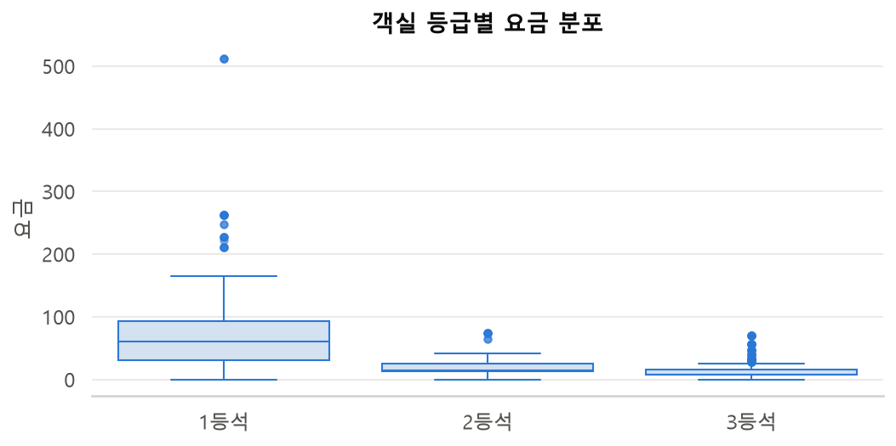
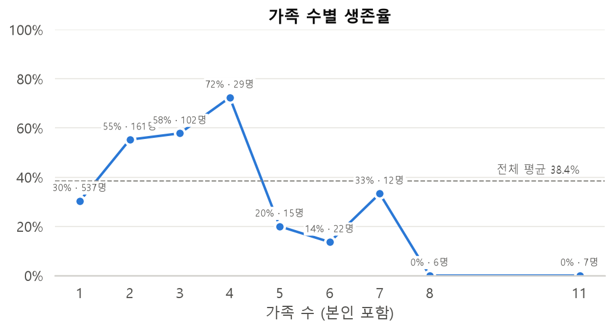
상관계수는 -1 ~ 1 사이 값입니다. +1에 가까우면 함께 커지고, -1에 가까우면 한쪽이 커질 때 다른 쪽은 작아지며, 0 근처면 별 관계가 없습니다. 성별은 숫자가 아니므로 map({"male": 0, "female": 1})로 바꿔서 계산합니다.
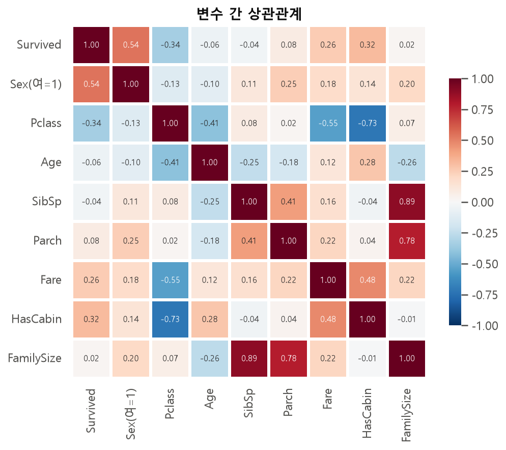
생존과 가장 관련이 큰 변수: 성별(+0.54) > 객실 등급(-0.34) > 객실 정보 유무(+0.32) > 요금(+0.26)
plt.show()에서 그래프 창이 뜨고, 창을 닫아야 다음 코드가 실행됩니다.| 요인 | 발견한 사실 |
|---|---|
| 성별 | 여성 생존율(74%)이 남성(19%)보다 압도적으로 높다 → 가장 강력한 요인 |
| 객실 등급 | 1등석(63%) > 2등석(47%) > 3등석(24%). 높은 등급일수록 생존율이 높다 |
| 나이 | 어린이(특히 Master 호칭의 남자아이)는 생존율이 높았다 |
| 가족 수 | 2~4인 가족이 가장 높고, 혼자이거나 5인 이상이면 낮았다 |
| 탑승 항구 | C 항구 생존율이 높았지만, 1등석 비율이 높았기 때문이다 (상관 ≠ 인과) |
이 표는 "무엇이 관련 있었나"라는 사실입니다. 이 사실들이 서로 어떻게 얽혀 있고 무엇을 의미하는지는 10장 인사이트에서 한 단계 더 깊이 들어갑니다.
머신러닝 없이, 분석에서 찾은 규칙만으로 생존 여부를 맞혀 봅니다. 정확도 = 예측이 맞은 승객 수 ÷ 전체 승객 수입니다.
예제 8-1 ~ 8-3y = df['Survived'].values # 실제 정답 (넘파이 배열) # 규칙 0 : 모두 사망했다고 예측 pred0 = np.zeros(len(df), dtype=int) (pred0 == y).mean() # 맞힌 비율 → 61.6% # 규칙 1 : 여성은 생존, 남성은 사망 pred1 = np.where(df['Sex'] == 'female', 1, 0) (pred1 == y).mean() # 78.7% # 규칙 2 : 규칙 1 + 예외 (3 등석 대가족 여성은 사망, 1·2 등석 남자아이는 생존) is_female = df['Sex'] == 'female' is_poor_bigfam = (df['Pclass'] == 3) & (df['FamilySize'] >= 5) is_rich_boy = (df['Title'] == 'Master') & (df['Pclass'] <= 2) pred2 = np.where((is_female & ~is_poor_bigfam) | is_rich_boy, 1, 0) (pred2 == y).mean() # 82.4%
&(그리고), |(또는), ~(아니다)로 연결하고, 조건마다 괄호( )를 꼭 쳐야 합니다. 파이썬의 and, or는 판다스/넘파이 배열에 쓸 수 없습니다.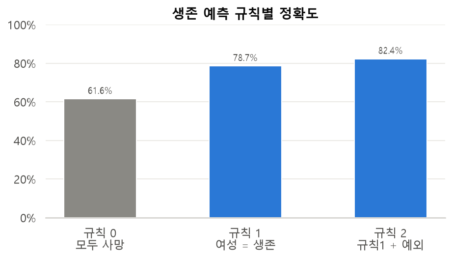
| 하고 싶은 일 | 판다스 / 넘파이 코드 |
|---|---|
| CSV 불러오기 | pd.read_csv('파일.csv') |
| 크기 · 구조 보기 | df.shape, df.info(), df.head() |
| 요약 통계 | df.describe() |
| 결측치 개수 | df.isnull().sum() |
| 결측치 채우기 | df['열'] = df['열'].fillna(값) |
| 그룹별 값으로 채우기 | df.groupby('그룹')['열'].transform('median') |
| 열 삭제 | df.drop(columns=['열']) |
| 값별 개수 | df['열'].value_counts() |
| 그룹별 생존율 | df.groupby('열')['Survived'].mean() |
| 교차 분석 | pd.pivot_table(...), pd.crosstab(...) |
| 조건으로 값 만들기 | np.where(조건, 참값, 거짓값) |
| 구간 나누기 | pd.cut(...), pd.qcut(...) |
| 문자열 추출 | df['열'].str.extract(정규식) |
| 그래프 | sns.countplot, barplot, histplot, boxplot, heatmap |
| 파일로 저장 | df.to_csv('파일.csv', index=False, encoding='utf-8-sig') |
| 증상 / 오류 메시지 | 원인 | 해결 |
|---|---|---|
| HTTPError: 404 | URL 오타, 또는 깃허브에 파일이 없음 | raw 주소와 파일 이름(titanic_kaggle.csv) 확인 |
| KeyError: 'Embarked' (읽은 직후) | seaborn 버전 titanic.csv를 읽음 (열 이름 소문자) | Kaggle 원본 titanic_kaggle.csv 주소로 바꾸기 |
| FileNotFoundError | 로컬 파일 사용 시 CSV가 작업 폴더에 없음 | CSV를 노트북과 같은 폴더로 옮기기 |
| ModuleNotFoundError | 패키지 미설치 | pip install pandas numpy matplotlib seaborn |
| 그래프 한글이 □□□ | 한글 폰트 미설정 | 1-2 폰트 설정 셀 다시 실행 |
| fillna를 했는데 값이 그대로 | 결과를 대입하지 않음 | df['열'] = df['열'].fillna(값) |
| KeyError: 'age' | 열 이름 오타 (대소문자 구분!) | 'Age'처럼 정확히 입력 |
| ValueError: The truth value of a Series is ambiguous | 조건에 and / or 사용 | &, |와 괄호 사용 |
04_실습문제_타이타닉의 15문제를 풀어 보세요. 문제마다 힌트와 참고할 장 번호, 확인용 정답 값이 적혀 있고, 모범 답안은 부록 A에 있습니다.사실은 "여성 생존율 74%"처럼 숫자 그 자체이고, 인사이트는 여러 사실을 엮어 "그래서 무엇을 뜻하는가"를 말하는 것입니다. 아래 다섯 가지는 지금까지 배운 groupby·pivot_table·crosstab만으로 찾을 수 있습니다. 숫자는 모두 891명 전체 데이터(교안 3장 방식으로 결측치 처리) 기준입니다.
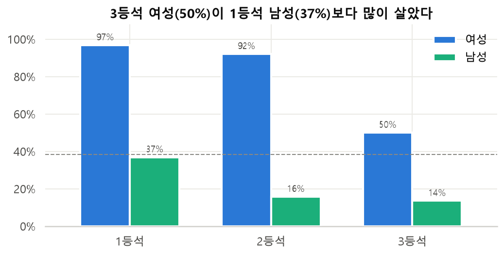
1등석 남성의 생존율은 36.9%, 3등석 여성은 50.0%입니다. 가장 비싼 표를 산 남성보다 가장 싼 표를 산 여성이 더 많이 살았습니다. 같은 등급 안에서 남녀 차이는 37~76%p인데, 같은 성별 안에서 1·3등석 차이는 23~47%p입니다. 상관계수도 성별(+0.54)이 등급(-0.34)보다 큽니다.
배운 기술 : pivot_table(index='Sex', columns='Pclass') — 두 변수를 함께 놓아야 어느 쪽이 더 센지 보입니다.
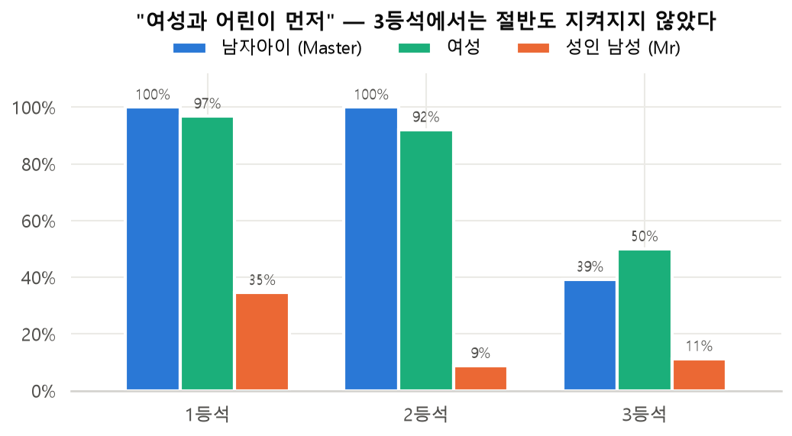
1·2등석 남자아이(Master)는 12명 전원(100%) 살아남았지만, 3등석 남자아이는 28명 중 11명(39.3%)만 살았습니다. 여성도 1·2등석은 92~97%였지만 3등석은 50%에 그쳤습니다. 규범은 모두에게 똑같이 적용되지 않았습니다.
배운 기술 : str.extract로 만든 Title 파생 변수 + groupby — 파생 변수가 없었다면 "남자아이"라는 집단 자체를 볼 수 없었습니다.
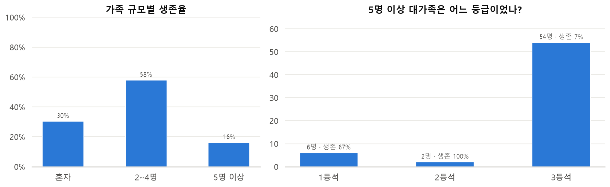
혼자 탄 승객 30.4%, 2~4명 가족 57.9%, 5명 이상 대가족 16.1%로 역U자 모양입니다. 그런데 5명 이상 대가족 62명 중 54명(87%)이 3등석이었고, 이들의 생존율은 7.4%에 불과했습니다.
배운 기술 : pd.cut으로 구간 만들기 + pivot_table로 등급과 교차 — 관계가 직선이 아닐 때는 구간으로 나눠 보세요.
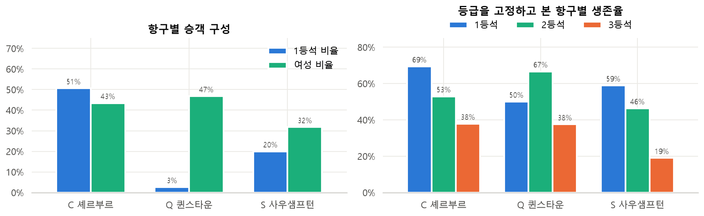
C(셰르부르) 승객의 생존율은 55.4%로 S(사우샘프턴) 33.9%보다 높습니다. 그런데 C 승객은 51%가 1등석, 43%가 여성이었고, S 승객은 1등석 20%, 여성 32%였습니다. 즉 C 항구의 높은 생존율은 대부분 "누가 탔는가"의 차이입니다. 등급을 고정하고 보면 차이가 크게 줄어듭니다. 다만 등급을 고정해도 C가 조금 더 높은 부분(예: 3등석 38% vs 19%)은 성별 구성 차이와 작은 표본(C 2등석은 17명뿐)이 섞인 결과라, 단정할 수 없습니다.
배운 기술 : crosstab(normalize='index')로 구성 비율 보기 + pivot_table로 조건 고정하기
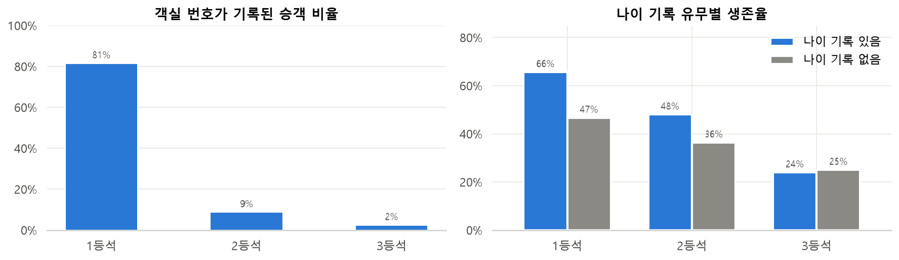
객실 번호(Cabin)가 기록된 승객은 생존율 66.7%, 기록이 없는 승객은 30.0%입니다. 하지만 이것은 객실 번호가 사람을 살린 것이 아닙니다. 1등석은 81%가 객실 번호가 기록됐지만 3등석은 2.4%뿐입니다. 나이(Age)도 마찬가지로, 나이 기록이 없는 승객의 생존율(29.4%)이 있는 승객(40.6%)보다 낮은데, 나이 기록이 없는 177명 중 136명(77%)이 3등석입니다.
배운 기술 : isnull()로 결측 여부를 0/1 변수로 만들고 → groupby로 결측 집단의 특징 비교
문법은 검색하면 나오지만, 분석하는 태도와 순서는 직접 해 봐야 몸에 남습니다. 오늘 타이타닉 분석에서 실제로 겪은 장면을 바탕으로, 다른 어떤 데이터를 만나도 써먹을 수 있는 방법을 정리합니다.
이 수업은 "누가 살아남았고, 왜?"라는 질문 하나로 시작했습니다. 질문이 있어야 어떤 열을 보고 어떤 그래프를 그릴지 정해집니다. 질문 없이 describe()부터 돌리면 숫자는 많아지는데 결론이 없습니다.
실천 : 노트북 첫 셀에 질문 2~3개를 적어 두고, 분석이 끝나면 그 질문에 한 문장씩 답하세요.
shape → head → info → describe 네 가지는 매번 확인합니다. 그 덕분에 Age가 714개뿐이라는 것, Fare의 평균(32)이 중앙값(14)보다 훨씬 크다는 것, seaborn 버전 파일은 열 이름이 다르다는 것을 일찍 발견했습니다. 원본은 df_raw = df.copy()로 보관하세요.
실천 : 분석 전에 "이 데이터는 누가, 언제, 어떻게 모았나? 무엇이 빠져 있나?"를 한 줄로 적어 보세요.
Cabin은 77%가 비어 있어 채우지 않고 HasCabin으로 바꿨고, Age는 등급·성별 그룹 중앙값으로 채웠고, Embarked는 2개라 최빈값으로 채웠습니다. 같은 "빈 값"이라도 처리 방법이 모두 달랐습니다. 그리고 인사이트 ⑤처럼 비어 있다는 사실 자체가 3등석이라는 신호였습니다.
실천 : 결측치를 처리하기 전에 df.groupby(df['열'].isnull())['타깃'].mean()으로 "빈 집단"과 "찬 집단"이 다른지 확인하세요. 처리 후에는 7-2처럼 분포가 왜곡되지 않았는지 그래프로 확인하세요.
"C 항구 생존율이 높다"는 한 변수 분석의 결론은 등급으로 쪼개자 대부분 사라졌습니다(인사이트 ④). "Master 생존율 57.5%"도 등급으로 쪼개자 100%와 39%로 갈라졌습니다(인사이트 ②). 평균은 서로 다른 집단을 섞어 버립니다.
실천 : 흥미로운 차이를 발견하면 곧바로 "이것을 등급(또는 성별, 나이대)으로 나눠도 그대로일까?"를 pivot_table로 확인하세요. 칸마다 인원 수(aggfunc='count')도 같이 보고, 20명 미만인 칸의 숫자는 조심해서 말하세요.
"모두 사망" 규칙도 61.6%를 맞힙니다. 그러니 82%라는 숫자는 기준선보다 약 21%p 나아졌다는 뜻으로 읽어야 합니다. 또 규칙을 만든 데이터로 채점하면 점수가 부풀려집니다. 아래 그림은 결정 트리를 점점 복잡하게 만들었을 때입니다. 깊이 제한이 없는 트리는 본 데이터에서 98%를 맞히지만, 안 본 데이터에서는 78.7%로 단순한 "여성 = 생존" 규칙(78.7%)과 같은 수준입니다. 외워서 푼 것이지 이해한 것이 아닙니다.
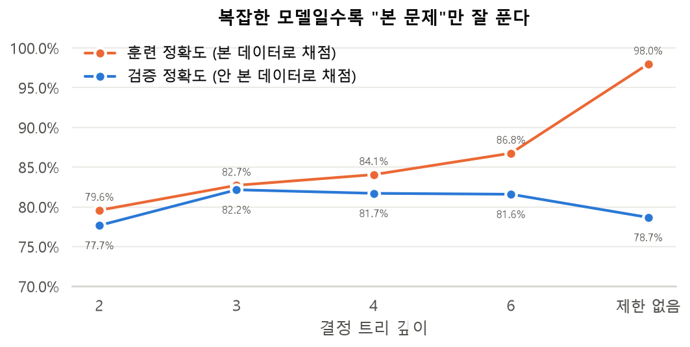
실천 : 모든 결과에 "무엇과 비교해서?"를 붙이세요. 예측을 한다면 데이터를 훈련/검증으로 나누고(train_test_split, cross_val_score), 단순한 모델이 비슷한 성능이면 단순한 쪽을 고르세요.
객실 번호가 기록된 사람이 많이 살았다고 해서 "객실 번호를 기록하면 산다"가 아닙니다. 데이터는 "함께 움직였다"까지만 말해 줍니다. "왜"는 도메인 지식(배의 구조, 당시 구조 원칙)으로 설명하되, 그것이 해석(가설)임을 분명히 하세요.
실천 : 보고서에서 "~때문이다" 대신 "~와 관련이 있다", "~로 해석할 수 있다"를 쓰고, 다른 설명(교란 변수)이 가능한지 한 줄 덧붙이세요.
"female 0.742, male 0.189"는 결과이고, "3등석 여성이 1등석 남성보다 많이 살았다 — 성별이 등급보다 강했다"는 인사이트입니다. 그래프는 한 장에 메시지 하나만 담고, 제목에 그 메시지를 쓰세요(10장 그래프 제목들처럼). 같은 의미에는 같은 색을 쓰고(이 교안은 생존=파랑, 사망=주황), 퍼센트에는 인원 수를 함께 표시하세요.
실천 : 모든 그래프 아래에 "이 그래프가 말하는 것"을 한 문장으로 적어 보세요. 한 문장으로 안 써지면 그래프를 다시 그려야 한다는 신호입니다.
| 단계 | 스스로 던질 질문 |
|---|---|
| 질문 | 무엇을 알고 싶은가? 결과를 누가 어디에 쓰는가? |
| 살펴보기 | 몇 행·몇 열? 자료형은 맞나? 이상한 값(0원, 512원)은 없나? |
| 정제 | 왜 비었나? 채울까, 지울까, 변수로 만들까? 처리 후 분포는 그대로인가? |
| 탐색 | 한 변수씩 → 두 변수 조합으로. 이 차이는 다른 변수로 나눠도 유지되나? 각 칸의 n은? |
| 검증 | 기준선보다 나은가? 안 본 데이터에서도 통하나? |
| 전달 | "그래서?"를 한 문장으로 말할 수 있나? 인과처럼 말하고 있지 않나? |
04_실습문제_타이타닉의 모범 답안입니다. 먼저 직접 풀어 본 뒤 확인하세요. 다른 방법으로 풀어도 결과가 같으면 정답입니다. 모든 정답은 원본 데이터를 새로 불러와서(data = pd.read_csv(DATA_URL)) 문제 순서대로 풀었을 때의 결과입니다.
data = pd.read_csv(DATA_URL) data.head(10)
결과 : 상위 10행 출력
print('행 개수 :', data.shape[0])
print('열 개수 :', data.shape[1])
결과 : 행 891, 열 12
pd.DataFrame({'결측치 수': data.isnull().sum(),
'비율(%)': (data.isnull().mean() * 100).round(1)})
결과 : Age 177(19.9%), Cabin 687(77.1%), Embarked 2(0.2%)
print('생존자 수 :', data['Survived'].sum())
print(f"생존율 : {data['Survived'].mean():.1%}")
결과 : 생존자 342명, 생존율 38.4%
data['Age'].mean(), data['Age'].max(), data['Age'].min()
결과 : 평균 29.7세, 최고령 80세, 최연소 0.42세 (생후 약 5개월 → 1세 미만은 소수로 기록)
data.groupby('Sex')['Survived'].agg(['count', 'mean'])
결과 : female 314명 74.2%, male 577명 18.9%
data.groupby('Pclass')['Fare'].mean().round(2)
결과 : 1등석 84.15, 2등석 20.66, 3등석 13.68 → 1등석이 3등석의 약 6.2배
data['Age'] = data['Age'].fillna(data.groupby('Sex')['Age'].transform('median'))
data['Age'].isnull().sum() # 0
결과 : Age 결측치 0개
data[data['Age'] < 10]['Survived'].mean() # 10 세 미만 data[data['Age'] >= 10]['Survived'].mean() # 10 세 이상
결과 : 10세 미만 61.3%, 10세 이상 36.7%
pd.pivot_table(data, index='Sex', columns='Pclass', values='Survived', aggfunc='mean')
결과 : 최고: 1등석 여성 96.8%, 최저: 3등석 남성 13.5%
data.groupby('Embarked')['Survived'].mean().sort_values(ascending=False)
결과 : C 55.4% > Q 39.0% > S 33.7% (원본 기준이라 본문의 33.9%와 조금 다름 — 결측치 2개를 S로 채우지 않았기 때문)
data['FamilySize'] = data['SibSp'] + data['Parch'] + 1
fam = data.groupby('FamilySize')['Survived'].mean()
fam.idxmax() # 가장 큰 값의 인덱스
결과 : 4명 (생존율 72.4%)
data['Title'] = data['Name'].str.extract(r',\s*([^\.]+)\.', expand=False)
t = data.groupby('Title')['Survived'].agg(['count', 'mean'])
t[t['count'] >= 5].sort_values('mean', ascending=False)
결과 : Mrs 79.2% > Miss 69.8% > Master 57.5% > Dr 42.9% > Mr 15.7% > Rev 0%
sns.barplot(data=data, x='Pclass', y='Survived', errorbar=None)
plt.title('객실 등급별 생존율'); plt.xlabel('객실 등급'); plt.ylabel('생존율')
plt.show()
결과 : 1등석 > 2등석 > 3등석 순의 막대그래프. hue="Sex"를 주면 성별로 나뉜 막대가 그려짐
my_rule = (((data['Sex'] == 'female') & ~((data['Pclass'] == 3) & (data['FamilySize'] >= 5)))
| ((data['Age'] < 10) & (data['Pclass'] <= 2)))
my_pred = np.where(my_rule, 1, 0)
(my_pred == data['Survived'].values).mean()
결과 : 82.3% (예시 답안. 78.7%를 넘기면 성공)
| 질문 | 답변 |
|---|---|
| 결측치는 항상 채워야 하나요? | 아닙니다. 비율, 중요도, 결측의 이유를 보고 판단합니다. Cabin처럼 너무 많이 비면 삭제하거나 "있음/없음" 정보만 남깁니다. |
| 평균과 중앙값 중 무엇으로 채우나요? | 이상치가 있거나 분포가 치우치면 중앙값, 대칭이면 평균도 괜찮습니다. 확실하지 않으면 중앙값이 안전합니다. |
groupby에 왜 observed=True를 주나요? | pd.cut으로 만든 범주형 열은 데이터에 없는 범주까지 결과에 나올 수 있어서, 실제로 있는 그룹만 계산하도록 하는 옵션입니다. |
| barplot 막대 위의 검은 선은 뭔가요? | 신뢰구간(오차 막대)입니다. 수업에서는 errorbar=None으로 숨겼습니다. |
| 82%면 좋은 모델인가요? | 기준선(61.6%)보다 높으니 의미는 있지만, 같은 데이터로 평가해서 낙관적인 값입니다. 11장 조언 ⑤처럼 훈련/검증을 나눠 평가해야 합니다. |
inplace=True는 왜 쓰면 안 되나요? | 판다스 3부터 Copy-on-Write가 기본이라 df["열"].fillna(..., inplace=True)는 원본을 바꾸지 않습니다. 대입 방식이 가장 확실합니다. |
| 사실과 인사이트는 어떻게 다른가요? | 사실은 "여성 생존율 74%", 인사이트는 "3등석 여성이 1등석 남성보다 많이 살았다 → 성별이 등급보다 강한 요인"처럼 여러 사실을 엮어 의미를 말하는 것입니다(10장). |
| 이 교안 PDF는 어떻게 다시 만드나요? | 저장소 루트에서 python handout_src/build.py를 실행하면 그림을 다시 그리고 크롬/엣지로 PDF를 인쇄합니다. 본문은 handout_src/handout.html에서 고칩니다. |